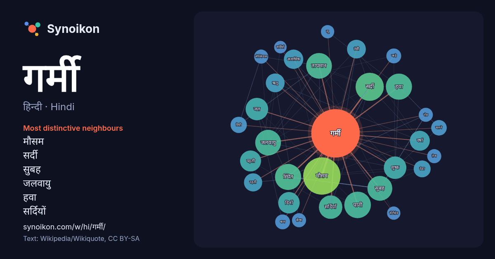

हिन्दी · Hindi · word of the day list
गर्मी
“summer” · The words found around it in 731 instances from Hindi Wikipedia, Wikiquote.

Most distinctive neighbours
- मौसम 48×
- सर्दी 35×
- सुबह 25×
- जलवायु 24×
- हवा 24×
- सर्दियों 23×
- तापमान 23×
- शुष्क 22×
- पड़ती 17×
- ठंडी 16×
- पानी 15×
- ऋतु 15×
- वर्षा 15×
- दिनों 14×
- अत्यधिक 13×
- ठंडा 13×
- जल 13×
- जाड़े 11×
- ग्रीष्म 9.7×
- सेल्सियस 9.3×
× = how many times more often than in general Hindi Wikipedia text.
Most frequent neighbours
- मौसम 63
- समय 42
- अधिक 41
- सर्दी 36
- पानी 32
- स्थित 31
- हवा 31
- जलवायु 30
- तापमान 30
- कारण 28
- सुबह 28
- सर्दियों 25
- जल 23
- शुष्क 23
- दिनों 21
- पड़ती 20
- वाली 20
- वर्षा 18
- अत्यधिक 17
- ऋतु 16
In context
- कुछ खरीफ की फसलें बोई जाती है। गर्मी से हमें लाभ भी बहुत हैं। यदि गर्मी अच्छी पड़ती है तो वर्षा भी खूब होती है। गर्मी के कारण ही अनाज पकता है और खाने Wikipedia snippets · ग्रीष्म ऋतु
- एक गर्मी प्रवाह सेन्सर एक त्रान्सद्यूसर होता है, जो सतह पर गर्मी पद्ने पर बिजली का सन्केत्(वोल्तेज्) उत्पन्न कर्त है, यह सन्केत गर्मी दर के लिए आनुपातिक Wikipedia snippets · गर्मी प्रवाह सेन्सर
- एक गर्म चमक ऊपरी शरीर में गर्मी की अचानक भावना है, जो आमतौर पर चेहरे, गर्दन और छाती पर सबसे अधिक तीव्र होती है। यद्यपि अन्य चिकित्सीय स्थितियां उन्हें Wikipedia snippets · गर्म चमक
- रहता है और फिर गर्मी प्रारम्भ होने लगती है। गर्मी का मौसम मई से आरम्भ होता है तो अक्टूबर के अन्त तक रहता है। जून और जुलाई सब से अधिक गर्म महीने हैं। सरकारी Wikipedia snippets · पंजाब (पाकिस्तान)
- मार्च से मई तक कस कर गर्मी पड़ती है। केरल के समुद्र तटीय क्षेत्र का तापमान कभी भी 17.5 डिग्री सेल्सियस से कम नहीं हुआ है। (5) गर्मी के मौसम का औसत तापमान Wikipedia snippets · केरल की जलवायु
- ब्राजील धारा, अन्ध महासागर में बहने वाली उच्च तापक्रम तथा उच्च लवणता वाली गर्म धारा हैं। इसका आविर्भाव दक्षिणी विषुवत रेखीय धारा के सनरॉक के पास ब्राजील Wikipedia snippets · ब्राज़ील धारा
- अनुसार वर्ष का तीसरा माह है। फागुन माह की विदाई के साथ ही गर्मी शुरू हो जाती है और इस माह को गर्मी का महीना भी कहा जाता है। ज्येष्ठ शुक्ल दशमी को गंगा दशहरा Wikipedia snippets · ज्येष्ठ (मास)
- यात्रियों और गर्मी के स्रोत को ले जाता है, ज्यादातर मामलों में तरल प्रोपेन को जलाने के कारण एक खुली लौ होती है। लिफाफे के अंदर की गर्म हवा इसे प्रफुल्लित Wikipedia snippets · गर्म हवा का गुब्बारा
More Hindi words
- इतिहास
- ईश्वर
- कार्य
- कुत्ता
- गाना
- घंटी
- घड़ी
- घोड़ा
- चाय
- चित्रकला
- छाया
- जंगल
- जलवायु
- जीवन
- तूफ़ान
- दर्पण
- द्वीप
- नक्षत्र
- नमक
- परिवार
- पहाड़
- पानी
- पैसा
- प्रकृति
- बगीचा
- बिल्ली
- भाषा
- भोजन
- माता
- मानचित्र
- मृत्यु
- मौन
- रेगिस्तान
- रेलगाड़ी
- रोटी
- वर्षा
- विज्ञान
- शक्ति
- शरद
- शहद
- शहर
- सड़क
- सत्य
- समय
- सर्दी
- सेतु
- स्वर्ण
- स्वास्थ्य
- हृदय
Precomputed on 2026-10-09 with default settings (±5 words, medium corpus). The interactive map can refresh it with live data.